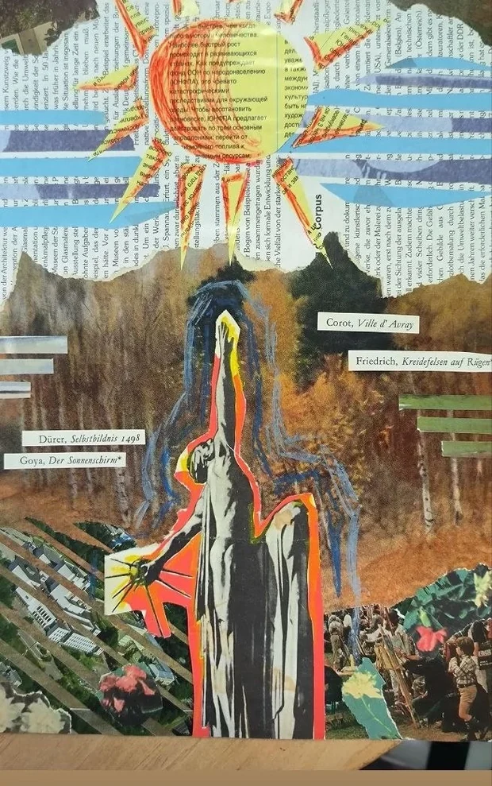
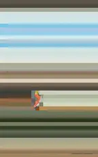
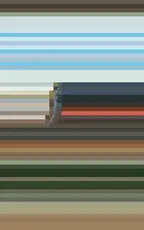

МАЙЯ
КОЛЛАЖ · 3D · МОУШН
КУРСОВАЯ, РАЗОБРАННАЯ НА КУСКИ.
НАЖМИТЕ «НАЧАТЬ» — И ОНА СОБЕРЁТСЯ ЗАНОВО.
 КУРСОВАЯ — ГОРОД, КУЛИСЫ
КУРСОВАЯ — ГОРОД, КУЛИСЫ


 Dürer — Cardinal Albrecht of Brandenburg, 1519 · Engraving
Dürer — Cardinal Albrecht of Brandenburg, 1519 · Engraving


 Dürer — Coat of Arms of Albrecht Dürer, 1523 · Woodcut
Dürer — Coat of Arms of Albrecht Dürer, 1523 · Woodcut


КУРСОВАЯ — КРАСНЫЙ ФРАГМЕНТКУРСОВАЯ — ГАЗЕТНЫЙ ТЕКСТ


ФОТО — СЪЁМКА

 Dürer — Cardinal Albrecht of Brandenburg, 1519 · Engraving
Dürer — Cardinal Albrecht of Brandenburg, 1519 · Engraving

КУРСОВАЯ — ЛИНИИ, РИСОВАННЫЕ ВОЛОСЫ


КУРСОВАЯ — ХОЛМ, ЗЕЛЁНОЕ
ФОТО — СЪЁМКА

 Goya — Plate 33 from "Los Caprichos": To the Count Palatine (Al Conde Palatino), 1799 · Etching, burnished aquatint, drypoint, burin
Goya — Plate 33 from "Los Caprichos": To the Count Palatine (Al Conde Palatino), 1799 · Etching, burnished aquatint, drypoint, burin
3D — САТИН И СТЕКЛО


 Corot — River with a Distant Tower, 1865 · Oil on canvas
Corot — River with a Distant Tower, 1865 · Oil on canvas
 Friedrich — Footpath with a Bridge, November 20–22, 1802(?) · Etching; only state
Friedrich — Footpath with a Bridge, November 20–22, 1802(?) · Etching; only state
ФОТО — СЪЁМКА


ФОТО — СЪЁМКА
КУРСОВАЯ — КРАСНЫЙ ФРАГМЕНТ

3D — САТИН И СТЕКЛО
 Goya — Gaspar de Guzmán, Count Duke of Olivares on horseback, after Velázquez, 1778 · Etching
Goya — Gaspar de Guzmán, Count Duke of Olivares on horseback, after Velázquez, 1778 · Etching

 Goya — Fan with leaves imitative of Goya and Watteau, late 19th century · Gouache on parchment; gilt metal, silver (?), paste (?)
Goya — Fan with leaves imitative of Goya and Watteau, late 19th century · Gouache on parchment; gilt metal, silver (?), paste (?) Corot — Gessate in the Province of Milan, 1834 · Pencil on off-white wove paper
Corot — Gessate in the Province of Milan, 1834 · Pencil on off-white wove paper


 КОЛЛАЖ
КОЛЛАЖИ ПЕЧАТЬ
ФРИДРИХРЮГЕН
 Goya — Gaspar de Guzmán, Count Duke of Olivares on horseback, after Velázquez, 1778 · Etching
Goya — Gaspar de Guzmán, Count Duke of Olivares on horseback, after Velázquez, 1778 · Etching Friedrich — Site of a Fire, September 29, 1802 (printed 1803 or later) · Etching on wove paper; second state
Friedrich — Site of a Fire, September 29, 1802 (printed 1803 or later) · Etching on wove paper; second state Corot — River with a Distant Tower, 1865 · Oil on canvas
Corot — River with a Distant Tower, 1865 · Oil on canvas Dürer — Cardinal Albrecht of Brandenburg, 1519 · Engraving
Dürer — Cardinal Albrecht of Brandenburg, 1519 · Engraving


КУРСОВАЯ — КОЛЛАЖ, ПЕЧАТЬ, МОНТАЖ
ДАЛЬШЕ — 3D
Friedrich — Footpath with a Bridge, November 20–22, 1802(?) · Etching; only stateКУРСОВАЯ — КРАСНЫЙ ФРАГМЕНТ
КУРСОВАЯ — КРАСНЫЙ ФРАГМЕНТ
КУРСОВАЯ — ГОРОД, КУЛИСЫDürer — Cardinal Albrecht of Brandenburg, 1519 · EngravingКОЛЛАЖИ ПЕЧАТЬ
КУРСОВАЯ — КОЛЛАЖ, ПЕЧАТЬ, МОНТАЖ